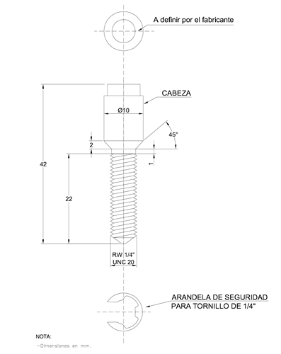

Siempre es más fácil conocer las normas ENEL-CODENSA
Rolex Rolex gold watch, compared with ordinary materials, gold watches are often expensive, but the replica rolex gold watch has the role of swiss replica watches hedging, so that it often becomes the first choice for collectors. The gold watch has value in the world, largely because the omega replica watch brand launched a commemorative limited edition watch or a replica hublot complex movement process or artistic attainments deep watches, mostly preferred gold precious metals such material. These watches tend to have a strong hedging function, therefore, Rolex Rolex gold watch reputation.

ET910 Tornillos de seguridad
Datos adicionales
Número de especificación
ET 910
Fecha de vigencia
11/01/2022
Herramientas adicionales
- Contenido Ocultar
- 1. OBJETO
- 1.1 Función
- 1.2 Definición
- 1.3 Condiciones climáticas
- 1.4 Condiciones de uso
- 2 CLASIFICACIÓN
- 2.1. Tornillo de seguridad con cabeza codificada (No destructible - cabeza giratoria):
- 2.2 Tornillo de seguridad con cabeza fusible (destructible – cabeza fija.):
- 3 REQUISITOS DEL PRODUCTO
- 3.1 Requisitos geométricos
- 3.2. Caracteristicas generales
- 3.3. Sistema de seguridad
- 4 PRUEBAS
- 4.1 Inspección visual
- 4.2 Verificación dimensional
- 4.3 Verificación de la operación del tornillo
- 4.4 Envejecimiento climático
- 4.5 Ensayo de torque
- 5 PRESENTACIÓN DE LAS OFERTAS
- 6 GARANTÍA DE FABRICA
- 7 INSPECCIÓN EN FABRICA
- 8 CRITERIOS DE ACEPTACIÓN O RECHAZO
- 8.1. Muestreo
- 8.2. Aceptación o Rechazo
- 9 EMPAQUE Y MARCACIÓN.
1. OBJETO
1.1 Función
Se utilizan como elementos de seguridad, fijación, ensamble o acople de partes componentes de los armarios, cajas para medidores o derivaciones de acometidas y luminarias.1.2 Definición
El tornillo es un elemento de fijación roscado exteriormente, diseñado para insertarse en los huecos de las partes por ensamblar, que se acopla a roscas internas preformadas o que se acopla también mediante la conformación de su propia rosca. Consta de cabeza y cilindro, sobre ésta se aplica el par de apriete.1.3 Condiciones climáticas
Serán empleados a la intemperie, siendo ésta generalmente de clima frío, cálido y húmedo.Los parámetros de operación son los siguientes:
| CARACTERÍSTICAS AMBIENTALES | |
| Altura sobre el nivel del mar | 1 500 a 2 640 m |
| Ambiente | Tropical |
| Humedad | Mayor al 90 % |
| Temperatura máxima y mínima | 45 ºC y - 5 ºC respectivamente. |
1.4 Condiciones de uso
Los tornillos se podrán instalar en cajas para medidores de una, dos, tres y cuatro cuentas, armarios de medidores, cajas y armarios para la instalación de CT´s y medidores, cajas de derivación de acometidas, pertenecientes a la red de distribución de BT.2 CLASIFICACIÓN
Los tornillos detallados en la presente especificación técnica son de dos tipos diferentes2.1. Tornillo de seguridad con cabeza codificada (No destructible - cabeza giratoria):
Estos tornillos serán de bronce latón ó acero inoxidable de alta resistencia, con cabeza de seguridad. El diseño de la cabeza y el mecanismo interno de la misma son responsabilidad del fabricante, respetándose en cualquier caso las dimensiones máximas establecidas para el tamaño de la cabeza, ver figura 1, permaneciendo invariables el tipo y tamaño de la rosca. Su colocación y extracción se podrá hacer solo con el empleo de una llave codificada y seriada con la combinación precisa del tornillo. (Figura 3 y 4)Los tornillos de cabeza codificada tienen entre otras las siguientes aplicaciones: cajas para medidores monofásicos de tapa extraíble, cajas para derivación de acometidas, cajas de medidores trifásicos y monofásicos de puerta plana, cajas para dos, tres y cuatro medidores, armarios para medidores, cajas de paso y armarios para transformadores de corriente y medidores de BT.
Se deberá suministrar el plano completo del tornillo, con sus especificaciones y un mínimo de llaves de accionamiento (cantidad a indicar por parte de Enel Codensa).
2.2 Tornillo de seguridad con cabeza fusible (destructible – cabeza fija.):
Estos tornillos serán de bronce latón ó acero inoxidable de alta resistencia, con cabeza de seguridad destructible. El diseño de la cabeza y el mecanismo interno o externo de la misma son responsabilidad del fabricante, finalmente se debe respetar en cualquier caso las dimensiones máximas establecidas para el tamaño final de la cabeza, ver figura 1, permaneciendo invariables el tipo y tamaño de la rosca. Su colocación y posterior destrucción para la extracción se podrá hacer solo con el empleo de una llave codificada y seriada con la combinación precisa del tornillo. (Figura 3)Los tornillos de cabeza fusible tienen entre otras las siguientes aplicaciones: cajas para medidores monofásicos de tapa extraíble, cajas para derivación de acometidas, cajas de medidores trifásicos y monofásicos de puerta plana, cajas para dos, tres y cuatro medidores, armarios para medidores, cajas de paso y armarios para transformadores de corriente y medidores de BT.
Se deberá suministrar el plano completo del tornillo, con sus especificaciones y un mínimo de llaves de accionamiento (cantidad a indicar por parte de Enel Codensa).
Su uso es determinado según el grado de seguridad requerido en la zona de instalación.
El valor de torque de actuación de dicho fusible estará alrededor de 3,2 daNm o el acordado entre el fabricante y Enel Codensa.
3 REQUISITOS DEL PRODUCTO
Los tornillos deberán ser fabricados en bronce – latón ó acero inoxidable de alta resistencia y cumplir con las especificaciones de la norma ANSI B 1.1.Todos los tornillos, deberán suministrarse con su respectiva arandela de seguridad y debe cumplir con las dimensiones descritas en la figura 1.
Las partes roscadas de las mismas deben avellanarse en la cara o caras de contacto
3.1 Requisitos geométricos
Los tornillos se conformarán en forma, dimensiones y tolerancias de acuerdo con las indicadas en las figuras 1 y 2.TABLA 1
| Tamaño nominal | Designación | Clase | Diámetro externo | |
| Max (pulg) | Min (pulg) | |||
| ¼” -20 hilos | UNC | 2A | 0.2489 | 0.2408 |
3.2. Caracteristicas generales
Los tornillos de seguridad deben cumplir con las siguientes características:| No. | CARACTERÍSTICAS GENERALES | DIMENSIONES |
| 1 | Longitud Total | 42 |
| 2 | Diámetro de la cabeza | 10 |
| 3 | Longitud de la cabeza | 18 |
| 4 | Longitud del área roscada | 22 |
| 5 | Tipo de rosca | ¼ 20 UNC |
| 6 | Paso de la Rosca | 20 hilos/pulg. |
| 7 | Tolerancia | Long ± 5, Diam ± 0.2 |
| 8 | Material | Bronce –Latón ó Acero inoxidable |
| 9 | Composición Química para el bronce | Cu-70%, Zn-30% |
| 10 | Carga a la Torsión Kg-m | 7.5 (Bronce-latón), 10 (Acero inoxidable) |
| 11 | Carga a la Tracción Kg/mm2 | 14-15 (Bronce-latón), 26 (Acero inoxidable) |
3.3. Sistema de seguridad
El diseño de la cabeza y sus mecanismos son responsabilidad y patente del fabricante así mismo se debe proveer el kit completo de operación de los tornillos, además, la capacitación sobre la instalación, cuidados, observaciones y su respectiva remoción.4 PRUEBAS
Los tornillos deben ser sometidos a las siguientes pruebas:
| PRUEBAS A REALIZAR | TIPOS DE PRUEBAS | ||
| Tipo / Homologación | Rutina / Fabricación | Aceptación / Recepción | |
| Inspección visual | X | X | X |
| Verificación dimensional | X | X | X |
| Verificación de la operación del tornillo | X | X | X |
| Ensayo de envejecimiento climático | X | ||
| Ensayo de torque | X | X | X |
4.1 Inspección visual
Se verificará:- La buena terminación de todos los elementos constitutivos del tornillo y sus accesorios.
- La ausencia de grietas, sopladuras, poros, exfoliaduras, ampolladuras, cascaduras u otros defectos.
4.2 Verificación dimensional
Se verificará con base en:- El tamaño el buje de seguridad donde va inserto el tornillo.
- Planos entregados por el fabricante y aprobados por Enel Codensa.
4.3 Verificación de la operación del tornillo
Se comprobará el correcto funcionamiento del elemento bajo ensayo, debiendo éste cumplir con todas las premisas de diseño, terminación, identificación y embalaje requeridas en la presente.4.4 Envejecimiento climático
Los tornillos construidos acero se deben someter a la prueba de envejecimiento climático según ASTM G155, método “I” 600 hs. (únicamente para los tornillos de acero inoxidable)4.5 Ensayo de torque
Se realizará sobre tres muestras de tornillos con cabeza fusible. Montado el mismo sobre un dispositivo lo suficientemente robusto a fin de evitar su torsión, se aplicará mediante el empleo de una llave del tipo tubo un esfuerzo de torsión comprendido entre 3,2 daNm (a convenir con el fabricante de acuerdo al diseño de la cabeza y su operación).Hecho esto y haciendo tope mecánicamente el tornillo en su avance, se debe producir la rotura de la cabeza fusible. Verificando que la cabeza no permita aflojar el tornillo de su posición.
5 PRESENTACIÓN DE LAS OFERTAS
El oferente obligatoriamente deberá incluir con su propuesta, la siguiente información:- Planilla de características técnicas garantizadas, la cual deberá ser diligenciada completamente en formato Excel.
- Catálogos originales completos y actualizados del fabricante, que correspondan a los bienes cotizados en la planilla de características técnicas garantizadas.
- Protocolos de pruebas de acuerdo con las normas indicadas en el numeral 4 de la presente especificación. En tales protocolos se deberán anotar las fechas de fabricación y pruebas del equipo, para permitir la verificación de las características técnicas garantizadas.
- Certificación del sistema de calidad del fabricante
- Carta de garantía de los bienes cotizados.
- En caso que se requiera se podrán exigir muestras de cada una de las referencias ofertadas sin cargo a devolución, con cada una de las características técnicas, solicitadas y mencionadas en la presente especificación.
- Información adicional que considere aporta explicación a su diseño (dibujos, detalles, características de operación, dimensiones y pesos de los materiales ofertados).
Enel Codensa podrá descartar ofertas que no cumplan con las anteriores disposiciones, sin expresión de causa ni obligación de compensación.
6 GARANTÍA DE FABRICA
Enel Codensa requiere como mínimo, un período de garantía de fábrica de doce (12) meses, a partir de la entrega.7 INSPECCIÓN EN FABRICA
Las inspecciones, pruebas y ensayos se realizarán según lo establecido en las Condiciones Contractuales para gestionar la Calidad de Componentes y Materiales, versión vigente.8 CRITERIOS DE ACEPTACIÓN O RECHAZO
8.1. Muestreo
El muestreo se llevará a cabo tomando para cada prueba de acuerdo a lo indicado en las Tablas 1 y 2TABLA 1. PLAN DE MUESTREO PARA INSPECCIÓN VISUAL Y DIMENSIONAL (NIVEL DE INSPECCIÓN II, AQL = 4%)
| TAMAÑO DEL LOTE | TAMAÑO DE LA MUESTRA | NÚMERO PERMITIDO DE DEFECTUOSOS |
| 3 a 15 | 3 | 0 |
| 16 a 25 | 3 | 0 |
| 26 a 90 | 13 | 1 |
| 91 a 150 | 20 | 2 |
| 151 a 280 | 32 | 3 |
| 281 a 500 | 50 | 5 |
| 501 a 1200 | 80 | 7 |
| 1201 a 3200 | 125 | 10 |
| 3201 a 10000 | 200 | 14 |
| 10001 y más | 315 | 21 |
TABLA 2. PLAN DE MUESTREO PARA LOS ENSAYOS MECÁNICOS (NIVEL DE INSPECCIÓN ESPECIAL S-3 AQL = 4%)
| TAMAÑO DEL LOTE | TAMAÑO DE LA MUESTRA | NÚMERO PERMITIDO DE DEFECTUOSOS |
| 2 a 15 | 2 | 0 |
| 16 a 50 | 3 | 0 |
| 51 a 150 | 5 | 0 |
| 151 a 500 | 8 | 1 |
| 501 a 3200 | 13 | 1 |
| 3201 a 35000 | 20 | 2 |
| 35000 y más | 32 | 3 |
8.2. Aceptación o Rechazo
Si el número de elementos defectuosos es menor o igual al correspondiente número de defectuosos dados en la tercera columna de las tablas 1 y 2 se deberá considerar que el lote cumple con los requisitos relacionados en el numeral 4 de esta especificación, en caso contrario el lote se rechazará por completo.9 EMPAQUE Y MARCACIÓN.
Los elementos se entregarán completos y armados, si corresponde, primeramente embalados en bolsas de polietileno selladas. Las cantidades serán tales que los pesos a manipular no superen los 15 kg. Posteriormente las bolsas serán colocadas dentro de cajas de cartón resistentes al manipulación, transporte y almacenamiento.Dichas cajas llevarán, como mínimo, las siguientes identificaciones :
- Marca o logotipo del fabricante.
- Modelo de elemento contenido.
- N° de la Orden de Compra correspondiente.
- Peso aproximado, en kg.
- Enel Codensa
- Código
- Fecha de fabricación.
Los materiales usados para el empaque (Cartón, Plástico, Icopor, etc) deben contener como mínimo un 40% de material reciclado pos consumo o pos industrial, lo cual se demostrará conforme a lo dispuesto en la ficha técnica del producto.
Adicionalmente los plásticos usados deben ser biodegradables en un porcentaje igual o superior al 30% según lo indicado en las normas NTC-5991-2014, ASTM D6400-04, UNE-EN-ISO 13432:2000-11, DINV54900-2. De la misma manera el proveedor debe asegurar que los materiales plásticos requeridos para el empaque no deben contener sustancias de interés ambiental en su composición como Zinc (Zn), Cobre (Cu), Níquel (Ni), Cadmio (Cd), Plomo (Pb), Mercurio (Hg), Cromo (Cr), Arsénico (As) y Cobalto (Co).
Los requisitos deberán ser demostrables con una ficha técnica del material utilizado.
Códigos:
Perno de seguridad ¼” NO destructible, código 510252.
Llave para perno de seguridad ¼” NO destructible, código 510260
Llave para perno de seguridad ¼” de cabeza triangular , código 510259
ANEXO 1. Plantilla de características técnicas garantizadas
| No. | ELEMENTO | CARACTERÍSTICAS | OFERTADO |
| 1 | Proponente | País de fabricación | |
| Fabricante | |||
| Representante del fabricante | |||
| 2 | Tornillo | Tipo de tornillo (con cabeza codificada o fusible) | |
| Longitud Total | |||
| Diámetro de la cabeza | |||
| Longitud de la cabeza | |||
| Longitud del área roscada | |||
| Tipo de rosca | |||
| Paso de la Rosca | |||
| Tolerancia | |||
| Material | |||
| Carga a la Torsión Kg-m | |||
| Carga a la Tracción Kg/mm2 | |||
| 3 | Empaque | Cumple con lo solicitado en el numeral 9 (Presentan ficha técnica del material utilizado) (si/no) | |
| 4 | Garantía | Mínimo 12 meses |

Fig 1. TORNILLO DE SEGURIDAD CON CABEZA CODIFICADA
.jpg "Fig 2. TORNILLO DE SEGURIDAD CON CABEZA FUSIBLE")
Fig 2. TORNILLO DE SEGURIDAD CON CABEZA FUSIBLE
.jpg "Fig 3. LLAVE PARA PERNO")
Fig 3. LLAVE PARA PERNO

Fig 4. LLAVE PARA CABEZA TRIANGULAR